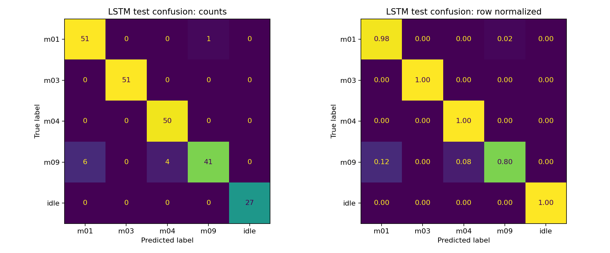
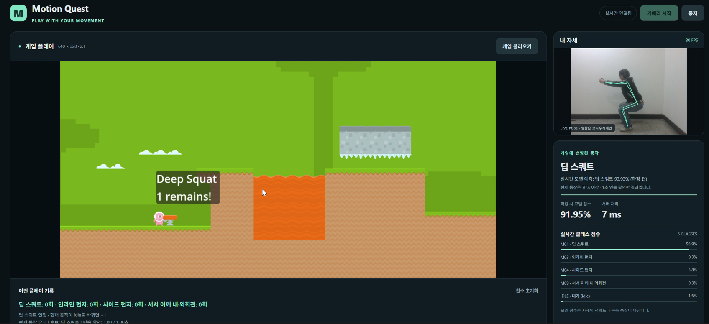
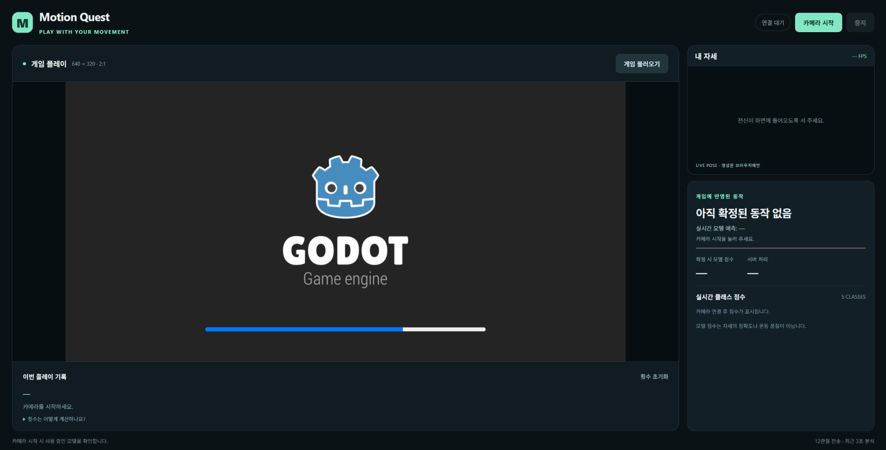
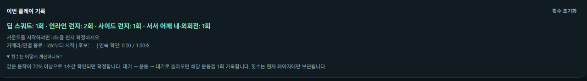

웹캠 동작 인식으로 움직이는 홈 트레이닝 게임
MediaPipe로 관절을 찾고, 직접 학습한 TCN이 3초 동안의 움직임을 읽어 게임 입력으로 바꿉니다.
왜 운동을 게임 입력으로 바꾸는가
웹캠 → 관절 → 분류 → 게임
UI-PRMD + 직접 수집한 idle, 분할과 전처리
제안 TCN vs 베이스라인 LSTM, 학습 설정
Dummy·LSTM·TCN 비교, 오류 분석, 한계
배포, 화면, 문제 해결 사례, 개선 계획
집에서 운동하고 싶지만 반복 운동에 쉽게 흥미를 잃는 사용자
영상 시청·횟수 기록만으로는 재미와 즉각적인 반응이 부족
집에서 PC와 웹캠으로 혼자 운동할 때
내 움직임이 게임에 반영되는 경험으로 참여 동기를 높이기
별도 장비 없이 웹캠만 사용합니다. 영상은 브라우저에 두고 관절 좌표만 서버로 보냅니다.
5개 클래스(운동 4 + 대기)의 F1 평균으로, 클래스 불균형에도 공정하게 평가합니다.
브라우저에서 카메라 프레임 획득
사전 학습 모델로 12개 관절의 world XYZ 추출
timestamp·XYZ·visibility만 JSON으로 전송 /ws/pose
3초 버퍼 → 30 Hz 보간 → [1, 90, 54] → TorchScript TCN
70% 이상 1초 유지 시 확정, idle→운동→idle이면 +1
같은 출처 iframe이 확정 동작을 읽어 캐릭터 행동으로
이미지 → 관절 좌표. 학습하지 않고 그대로 사용
관절 시계열 → 5개 클래스. 처음부터(scratch) 학습
pose_features.py 하나를 노트북과 서버가 공유, 해시로 검사
추론 주기 최소 250 ms(최대 약 4회/초) · 영상은 서버로 보내지 않고 관절 좌표만 전송 · 서버는 연결별로 최근 약 3초를 버퍼링
| 코드 | 클래스 | 출처 | 녹화 |
|---|---|---|---|
| M01 | Deep Squat | Vicon | 10 |
| M03 | Inline Lunge | Vicon | 9 |
| M04 | Side Lunge | Vicon | 10 |
| M09 | Shoulder Int.-Ext. Rotation | Vicon | 10 |
| idle | Standing Rest | 웹캠 | 5 |
녹화
원본 프레임
총 녹화 시간
M03_s03은 원본 데이터에서 누락되어 있으며 가상 샘플로 채우지 않았습니다.
| 클래스 | Train | Val | Test | 비율 |
|---|---|---|---|---|
| M01 Deep Squat | 149 | 59 | 52 | 23.4% |
| M03 Inline Lunge | 112 | 61 | 51 | 20.2% |
| M04 Side Lunge | 158 | 56 | 50 | 23.8% |
| M09 Shoulder Rotation | 136 | 38 | 51 | 20.3% |
| idle Standing Rest | 82 | 27 | 27 | 12.3% |
| 합계 (90프레임 창) | 637 | 241 | 231 | 1,109 |
idle이 12.3%로 적어 클래스 가중 Cross Entropy로 보정하고, Macro-F1·Balanced Accuracy로 평가합니다.
Train s01–s06 · Val s07–s08 · Test s09–s10
창 수 비율 57.4% : 21.7% : 20.8%
녹화 단위로 먼저 나눈 뒤 창을 생성합니다. 겹치는 창이 분할을 넘나들지 않습니다.
Random seed 42 고정 (Python·NumPy·PyTorch). 웹캠 idle 녹화는 3 : 1 : 1.
결측률 5%·연속 30프레임 이하만 보간, 초과 시 중단
Vicon 마커 117열 → 어깨·팔꿈치·손목·골반·무릎·발목 좌우
Vicon resample_poly(3,10), 웹캠은 타임스탬프 보간
90프레임, 30프레임 간격. 녹화 경계를 넘지 않음
골반 중심 이동 · 몸통 길이로 크기 · 좌우/수직/깊이 축
같은 XYZ에서 내각·기울기·좌우 차이 계산 → [0, 1]
train 평균·표준편차만 사용, 모델 내부에서 수행
train에서 50% 확률로 좌우 관절 교환
한 프레임만으로는 스쿼트의 서 있는 순간과 대기 자세를 구분할 수 없습니다. 최근 3초의 흐름을 함께 봐야 합니다.
Block = causal Conv1d 2개 + LayerNorm·ReLU·Dropout. Dilation 1→8로 수용 영역 61프레임.
파라미터
무작위 초기화부터 학습
파라미터 64,325 · 시계열 분류의 대표 구조라 비교 기준으로 선택
| 항목 | TCN (제안) | LSTM (베이스라인) |
|---|---|---|
| 시간 처리 | dilated 합성곱 + 평균 pooling | 순환 상태 + 마지막 시점 |
| 입력·분할·증강 | 동일 | |
| Optimizer | AdamW · lr 0.001 · wd 0.0001 | |
| Batch · Epoch | 64 · 최대 100 | |
| Loss | 클래스 가중 Cross Entropy | |
| 모델 선택 | Val Macro-F1 최고 · patience 15 | |
| Seed | 42 (LSTM 학습 직전 재설정) | |
구조 외 조건을 모두 맞춰, 성능 차이가 모델 구조에서만 나오도록 했습니다.
| 모델 | 실행 epoch | 선택 epoch | 최고 Val F1 |
|---|---|---|---|
| TCN | 16 | 1 | 1.0000 |
| LSTM | 19 | 4 | 1.0000 |
두 모델 모두 Val F1이 1.0에 도달한 뒤 15 epoch 동안 개선이 없어 early stopping으로 종료했습니다.
Validation 포화: 두 모델 모두 1.0이라 Val만으로는 우열을 가릴 수 없었습니다 → 최종 선택은 Test 지표로.
로그: history.csv · lstm_history.csv
| 모델 | Accuracy | Macro-F1 | Bal. Acc. | 녹화 Acc. |
|---|---|---|---|---|
| TCN (제안) ✔ | 1.0000 | 1.0000 | 1.0000 | 1.0000 |
| LSTM (베이스라인) | 0.9524 | 0.9558 | 0.9569 | 1.0000 |
| Dummy most frequent | 0.2165 | 0.0712 | 0.2000 | — |
| Dummy stratified | 0.1965 | 0.1861 | 0.1883 | — |
| Dummy uniform | 0.1996 | 0.1944 | 0.1945 | — |
Macro-F1 1.0000 ≥ 목표 0.80
라벨 분포만 쓰는 기준선. 모델이 실제 관절 정보를 쓰는지 확인
Dummy는 seed 42–51, 10회 평균 · 녹화 Acc.는 녹화별 다수결 정확도

| 실제 | LSTM 예측 | 창 | 확신도 |
|---|---|---|---|
| M09 어깨 회전 | M01 스쿼트 | 6 | 0.35–0.57 |
| M09 어깨 회전 | M04 사이드 런지 | 4 | 0.37–0.39 |
| M01 스쿼트 | M09 어깨 회전 | 1 | 0.49 |
확인된 범위: “저장된 test 분할에서 TCN이 더 안정적이었다.” 실제 웹캠 운동 인식 성능은 추가 수집이 필요합니다.



70% 이상 · 1초 유지 → 동작 확정
idle → 운동 → idle → +1 카운트
/ws/pose WebSocket 프록시 설정| 상황 | 처리 |
|---|---|
| 관절 수 ≠ 12, 비유한 좌표, 역행 timestamp | invalid_input + 원인 메시지 |
| 메시지 크기 초과 / 다른 출처 | 연결 종료 (1009 / 1008) |
| 관절을 찾지 못함 | 버퍼 유지, 안내 문구 |
| 1.5초 이상 예측 없음 | 후보 초기화, 마지막 확정 유지 |
| 카메라 권한 거부 | 권한·브라우저 안내 |
| 문제 | 원인 | 시도 | 결과 |
|---|---|---|---|
| 스쿼트 ↔ 인라인 런지 혼동 | 각도만으로는 다리 굽힘이 비슷 | 몸 기준 위치 36개를 각도 18개와 결합해 발 배치 반영 | M01↔M03 혼동률 0 (Vicon test) |
| 쉬는 중에도 운동으로 분류 | UI-PRMD에 대기 클래스 없음 | 웹캠 idle 직접 녹화(5개, 150초)해 5번째 클래스로 | idle 27창 정분류, 구간 카운트 구현 |
| Vicon ↔ MediaPipe 골격 불일치 | 마커 39개 vs landmark 33개, 축 방향 다름 | 공통 12관절 정의, 마커 평균 근사, 몸 기준 좌표계 | 웹캠 스쿼트를 M01 93.9%로 인식·확정 (정성 예시) |
| 학습·서버 전처리 불일치 | 특징 코드가 두 곳에 존재 | 단일 원본 + 노트북 동기화 + 해시 검사 | 불일치 시 서버가 시작 단계에서 중단 |
| 100%의 의미를 모름 | 비교 대상이 없음 | Dummy 3종 + LSTM 베이스라인, 선택 규칙 코드화 | Dummy ≤0.19 · LSTM 0.956 · TCN 1.0 |
4개 운동 모두를 여러 사람·각도·조명에서 웹캠으로 수집하고, 같은 센서로 운동과 idle을 구성해 센서 편향 제거
여러 seed 반복 학습으로 평균 ± 표준편차 비교, 특징 조합(각도/위치/둘 다) 비교, 웹캠 데이터로 재평가
학습과 같은 품질 필터를 서버에 적용, 관절 각도 주기로 실제 반복 횟수 검출, 사용자 테스트로 반응 조정
Q&A · 202435119 한여원 · motion-quest.duckdns.org